Mula de Brasa
Mula de fogo: releitura fantástica sem o componente religioso da lenda.
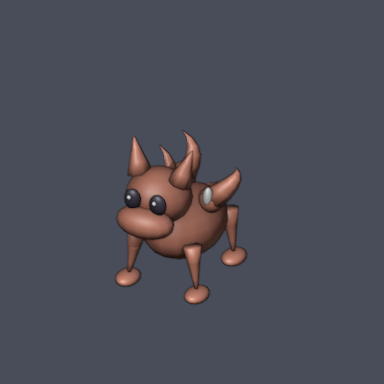
Abrir modelo .blend
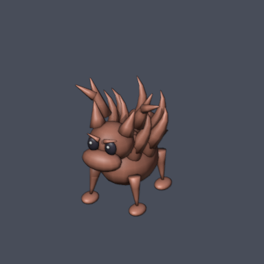
Abrir modelo .blend
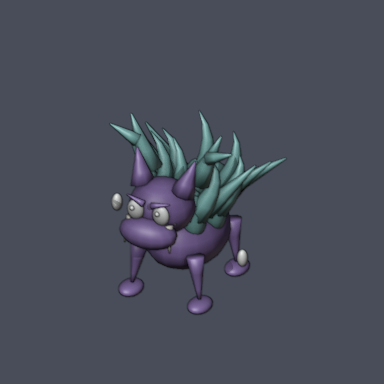
Abrir modelo .blend
Modelos Blender editáveis · Normal, Boss e Atroz · Arte preparada, sem spawns ativos.
As prévias mostram a modelagem 3D. Os sprites pixel art são produzidos pelo renderizador nativo quando necessário. Escala das imagens ajustada para revisão de detalhes.
Mula de fogo: releitura fantástica sem o componente religioso da lenda.



Fauna do cerrado e veredas; criatura original, com presas e folhas de buriti.
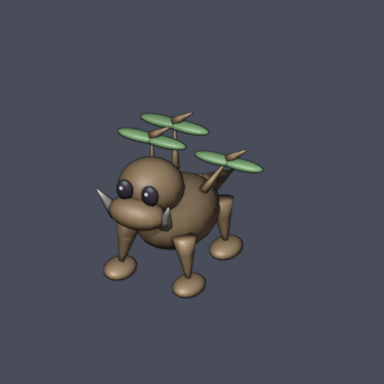
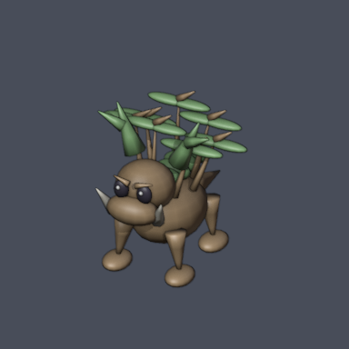
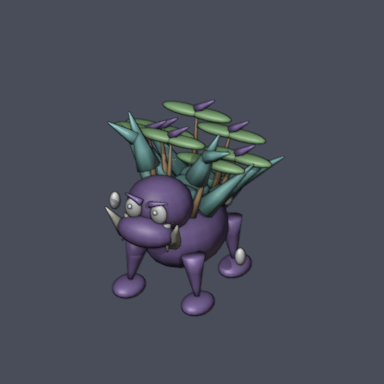
Serpente de fogo inspirada no imaginário do Boitatá; não é o chefe único da região.
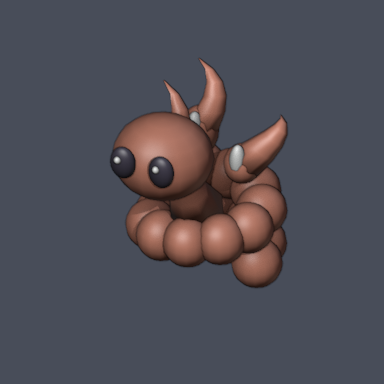
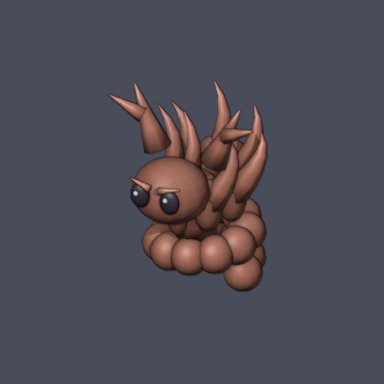
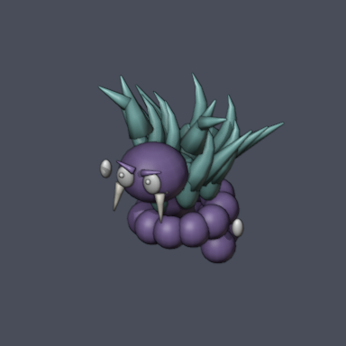
Coca como dragoa de fantasia, sem procissão; charnecas e ruínas portuguesas.
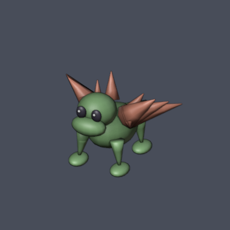
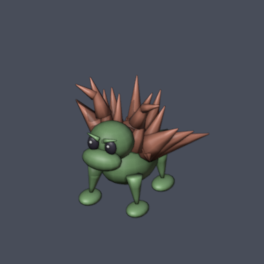
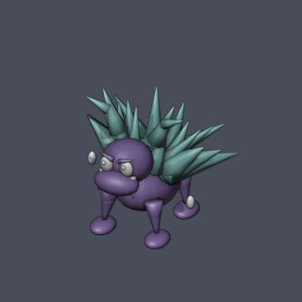
Criatura original de rocha e espuma inspirada nos cabos de Adamastor, sem representar o personagem único.
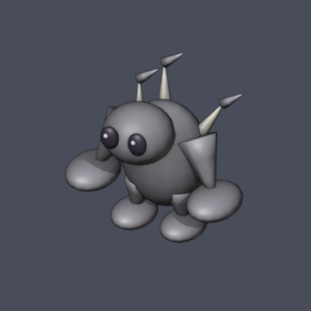
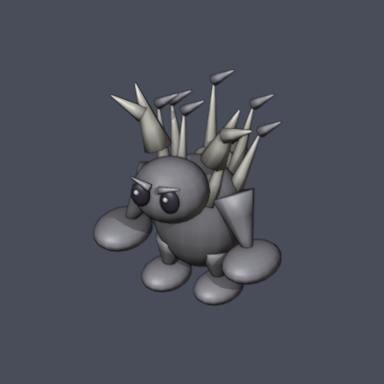
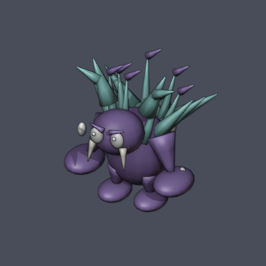
Objeto encantado inspirado no ouro fiado das mouras; as guardiãs não são inimigas.
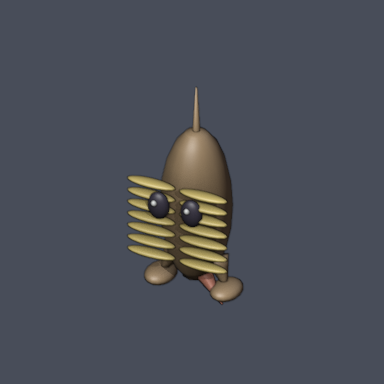
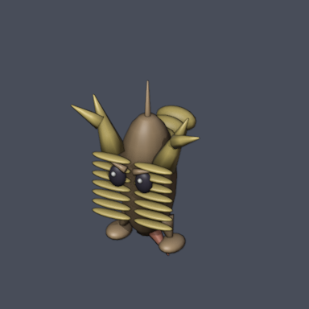
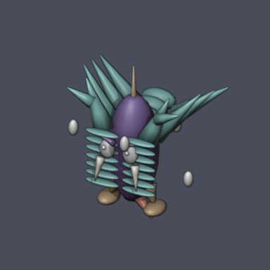
Releitura do kappa: casco, bico e cavidade de água na cabeça.
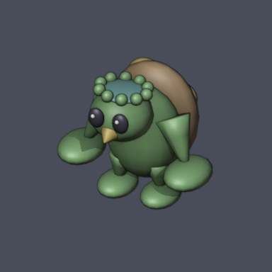
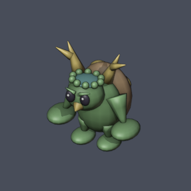
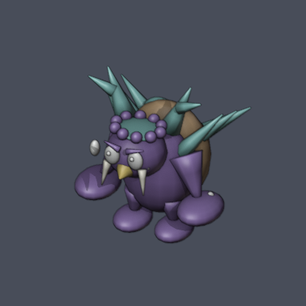
Criatura aviária inspirada no tengu, com leque de penas e nariz em bico; sem objetos religiosos.
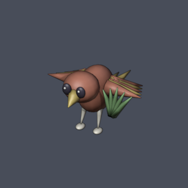
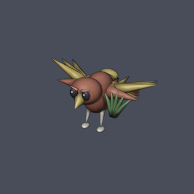
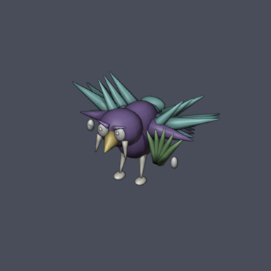
Objeto assombrado inspirado em lanternas do folclore japonês, sem escrita ritual.
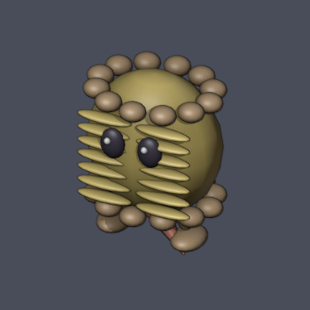
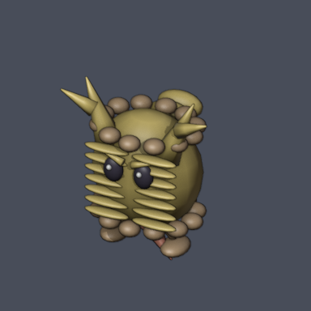
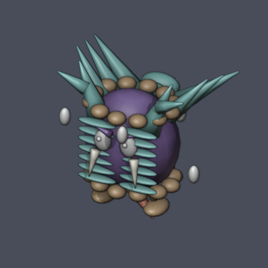
Lobo fantástico dos fiordes e contos do norte; não é Fenrir.
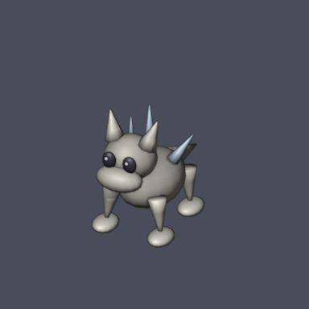
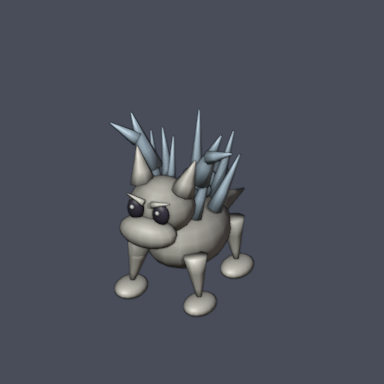
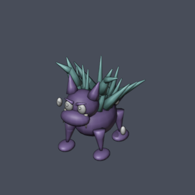
Fauna costeira fantástica com armadura de gelo; criação original.
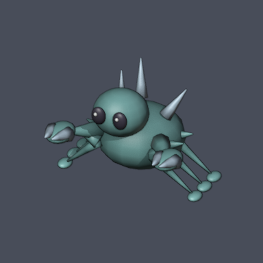
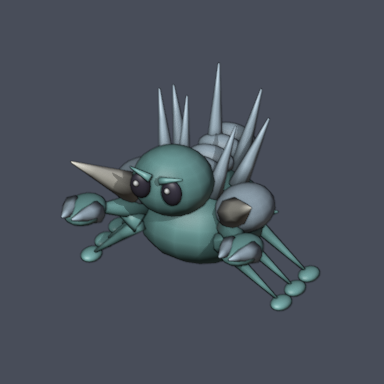
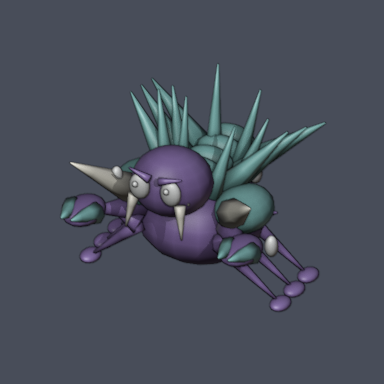
Armadura vazia inspirada em contos de assombrações marítimas e draugr, sem restos humanos ou runas reais.
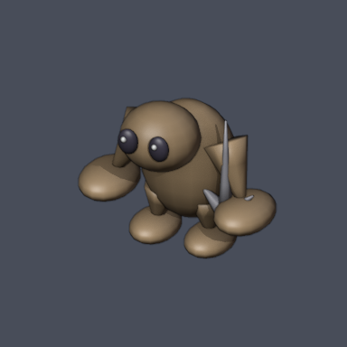
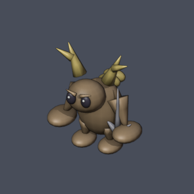
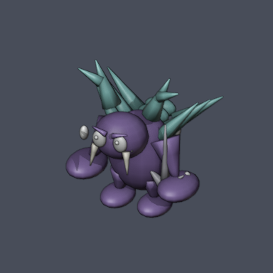
Touro autômato de fantasia inspirado em labirintos e bronze do imaginário grego.
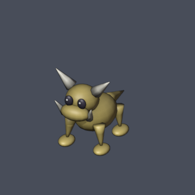
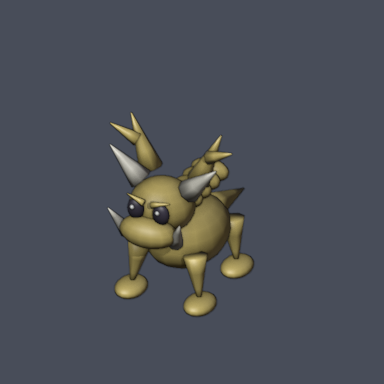
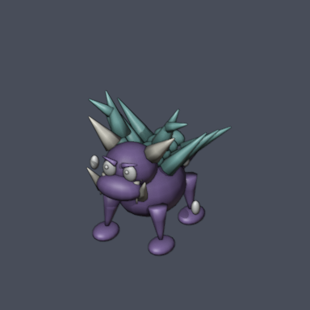
Hidra de três cabeças: criatura de mito grego adaptada como espécie, sem deuses.
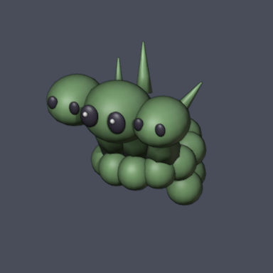
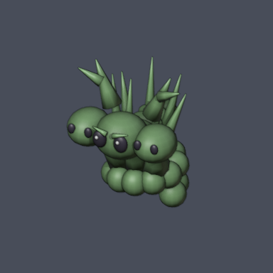
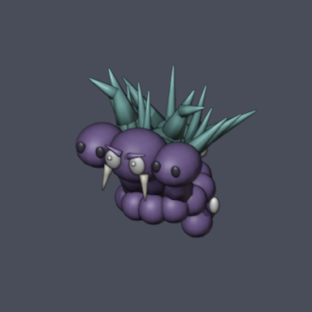
Harpia reinterpretada como ave fantástica chibi, sem sexualização.
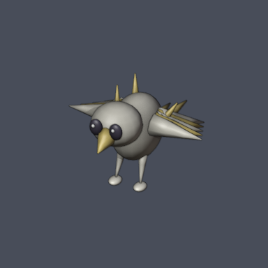
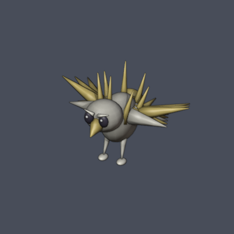
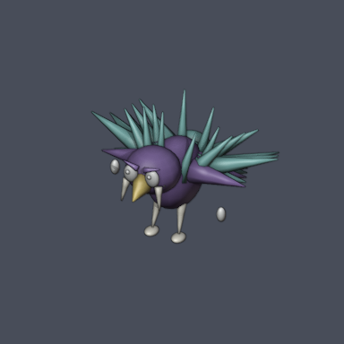
Besouro fantástico de dunas com élitros de vidro; sem personificar divindades.
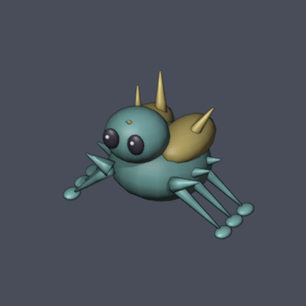
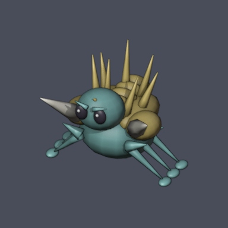
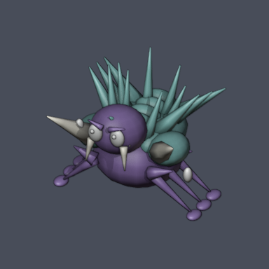
Naja da fauna regional com capuz mineral; criatura original, não Apep.
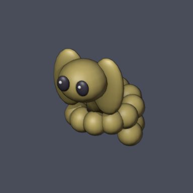
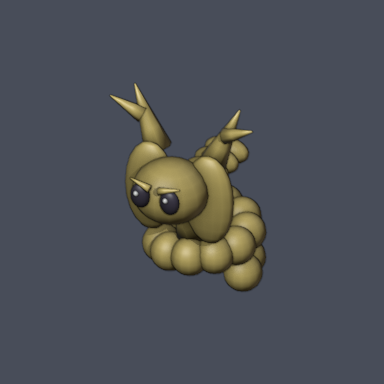
Fauna do Nilo transformada em criatura de fantasia; sem símbolos religiosos.
Cão feérico de fantasia inspirado em contos das brumas escocesas.
Fogo-fátuo dos pântanos e contos de luzes errantes; sem representar uma divindade.
Gato feérico inspirado no imaginário do cat-sìth, com marca clara no peito.
Ave mágica inspirada no pássaro de fogo dos contos eslavos; não é uma divindade.
Objeto encantado inspirado no pilão dos contos de Baba Yaga; espécie original.
Fauna e florestas de bétulas da região; criatura original, sem atribuição folclórica literal.
Nian como fera fantástica de chifre e juba; sem imagens de sacerdotes.
Fauna e bambuzais reinterpretados com placas minerais; criatura original.
Carpa fantástica inspirada no imaginário de carpas e cascatas, com bigodes e nadadeiras em pincel.
Releitura fantástica do ahuizotl, criatura aquática com mão na cauda; não é nahual ou alux.
Fauna mexicana e minerais locais; criação original sem representar divindades.
Fauna de selvas e cavernas mesoamericanas; criatura original, sem deuses ou sacrifícios.